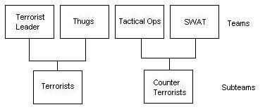

GOAL MAPPING
Half-life : Directors Cut allows map entities to control a game. If a server is running in teamplay with rounds mode and has goal modes enabled (mp_goalsoff 0) ,it will check to see if any game_score entities exist in the map upon loading. If any do exist in the map, the server will use the entities in the map to run the game. This effectively allows mappers to create their own game modes using existing half-life entities and AHL specific entities. Specific AHL entities are described in the Map entities section. Here we will describe how some of those entities are used. For the purposes of this tutorial we will use examples from two maps in RC2. Urban Riot and Action Railroad. Entities described in this tutorial have been extracted from the maps with the 'ripent' tool. This tool allows you to import and export entities to and from a BSP map file. This allows mappers to edit entities without recompiling the map.
Noreset Flag
The noreset flag is used to stop entities being used in normal DM play. The noreset flag should be set to '2' to do this.
Game Team Masters
Urban Riot is setup with two teams. Each team has game_team_master entity. Here I have kept things very simple. Each master is assigned a teamname. This teamname is used to reference the info_team entity that will be described a little later on.
{
"origin" "-3131 3347 -1962"
"targetname" "t1master"
"teamname" "The Cops"
"noreset" "2"
"classname" "game_team_master"
}
{
"origin" "-3128 3236 -1962"
"targetname" "t2master"
"teamname" "The Mob"
"noreset" "2"
"classname" "game_team_master"
}
In some maps you may find that a game_team_master has a field called 'teamindex' followed by a number. This is an older way of indexing teams in AHL. People would either specify the team order with '1','2','3' and so forth, or use '-1' to let the engine create the order. Some entities would then later reference the teamindex number, rather than use the teamname field.
Info Teams
Each team also has an info_team entity. This entity defines the team's name, model, lives and respawn times. Each info_team entity MUST have a master that is a game_team_master. A -1 in the lives field simply means 'infinite'. Respawn times are in seconds. In Urban riot there are no subteams. We will discuss subteams later on. When you have set an info_team entity master's field to a targetname of a master, you need to set it's 'name' field to match the game_team_master's teamname field.
{
"origin" "-3128 3314 -1938"
"master" "t1master"
"name" "The Cops"
"angle" "360"
"model" "nsi_swat"
"lives" "-1"
"respawn" "5"
"noreset" "2"
"classname" "info_team"
}
{
"origin" "-3128 3268 -1938"
"master" "t2master"
"name" "The Mob"
"angle" "360"
"model" "jawb"
"lives" "3"
"respawn" "0.5"
"noreset" "2"
"classname" "info_team"
}
NOTE: The order of the info_team entities is very important. The order in which they appear in the entity list of a map, is the order they will appear in the game. For teams without subteams this is simple. info_team order for subteams will be discussed later.
Monster Victims
The NPC victim for Urban Riot is a monster_victim entity. monster_victim entities are like their name, victims. They stay in one spot and can be killed. Urban Riot's looks like the following :
{
"origin" "-1969 1587 -1810"
"model" "models/player/alan/alan.mdl"
"rendercolor" "0 0 0"
"angle" "180"
"vic_init_health" "500"
"master" "t1master"
"deadtarget" "t1_deadwit"
"noreset" "2"
"classname" "monster_victim"
}
The monster_victim entity defines the model, angle, health of the NPC. If the NPC has a master, that team is effectively allied with the NPC and they cannot harm the NPC at all.Having the NPC share the same master of 'The Cops' means that no one from that team could spoil the game by killing the person they are supposed to be protecting. deadtarget describes the entity that should be triggered upon the demise of the NPC.
When a NPC Dies
The entity that deadtarget triggers to is t1_deadwit. This is a multi_manager entity. This particular multi-manager triggers two further entities. roundend and t2_score which are both multi-managers. roundend has a delay of 2 seconds here.
{
"origin" "-2033 1570 -1792"
"targetname" "t1_deadwit"
"roundend" "2"
"t2_score" "0"
"noreset" "2"
"classname" "multi_manager"
}
When a NPC Dies
There is only one roundend entity in urban riot. Only one is really need as it simply just ends the current round. There is a pause of 3.5 seconds before it fires.
{
"origin" "-2475 3272 -1960"
"wait" "3.5"
"targetname" "roundend"
"noreset" "2"
"classname" "game_roundend"
}
Events for NPC Death
The t2_score entity is another multi-manager that kicks off entities to give a victory to 'The Mob'. The endroundcam camera entity is called to give a view of the NPC. Next the t2_scorecounter, t2_scoretext and t2_gamescore entities are called with a 1 second delay.
{
"origin" "-2060 1567 -1832"
"endroundcam" "0"
"t2_scorecounter" "1"
"t2_scoretext" "1"
"t2_gamescore" "1"
"targetname" "t2_score"
"noreset" "2"
"classname" "multi_manager"
}
Camera Entity
The standard halflife camera entities consist of two parts. The camera itself (trigger_camera) and a target (info_target). Basically a camera will be set up to aim at the target and will show that view when triggered. The 'wait' field for the camera defines how long (in seconds) the view should be held. The target field is set to an info_target entity (camtarg). The spanwflags is set to 12. This equates to the following bit flags being set.
"Freeze Player" = 4
"Force ALL Players To Camera = 8
{
"origin" "-2236 1516 -1743"
"deceleration" "500"
"acceleration" "500"
"wait" "5"
"target" "camtarg"
"targetname" "endroundcam"
"spawnflags" "12"
"noreset" "2"
"classname" "trigger_camera"
}
The camera targets simply have a name that the camera references for it view angle.
{
"origin" "-2010 1566 -1775"
"targetname" "camtarg"
"noreset" "2"
"classname" "info_target"
}
Game Counter
There are two game_counter entities in Urban Riot, one for each team. The t2_scorecounter keeps tracks of how many rounds 'The Mob' have one. The health field is the threshold at which this entity will trigger the 'gameover' entity. Each time the t2_scorecounter is called it increments it count by one. Therefore if 'The Mob' kill the NPC 5 times, the game will end.
{
"origin" "-1945 1520 -1836"
"targetname" "t2_scorecounter"
"health" "5"
"target" "gameover"
"noreset" "2"
"classname" "game_counter"
}
Game End
The game_end entity simply ends the current game. Can be used to end a game when a certain score is reached for example.
{
"origin" "-3200 -71 -579"
"targetname" "gameover"
"noreset" "2"
"classname" "game_end"
}
Game Text
There are two game_text entities in Urban riot. They notify the two teams on who has won the round. The t2_scoretext entity below notifies everyone that the NPC has died. Currently game_text entities are not team specific yet.
{
"origin" "-1946 1547 -1840"
"targetname" "t2_scoretext"
"message" "The Mob have silenced the rat!"
"channel" "4"
"fxtime" "0.25"
"holdtime" "5"
"fadeout" "0.1"
"fadein" "0.1"
"color2" "240 110 0"
"color" "255 255 255"
"y" "0.4"
"x" "-1"
"spawnflags" "1"
"noreset" "2"
"classname" "game_text"
}
Game Score
The game_score entity is extremely important. The detection of one of these entities make AHL recognise that there is a goal. This entity can be used to add or subract points from a team. To subtract points simply use a negative value. The points are added to whatever teamname is specified. Game_score will add points to the team specified by the teamname attribute.
{
"origin" "-1968 1543 -1840"
"points" "1"
"teamname" "The Mob"
"targetname" "t2_gamescore"
"noreset" "2"
"classname" "game_score"
}
Game Player Die
The game_player_die entity is used to fire an event either when a whole team is killed, or a person on a team has been killed. The targetname field for this entity MUST be game_playerdie, otherwise this entity will not function. Here the entity will fire 't2_alldeadmm' (which is a multimanager to scoring a notification entities) when all of 'The Mob' team is dead. The presence of spawnflags=1 makes the game_player_die entity fire its target only when a whole team is dead (when no body has any lives left). If the spanwflag=1 is not present or some other value, the entity will fire upon every death of a member of that team. The most important attribute for the game_player_die entity is the master. This must be set to be the same as the team's game_team_master if you wish to act on the death of all members of that team. Dependent on the type of team it is, you will need to set the spawnflags to either :
1 = Whole Team
2 = Sub Team (See Terrorist Leader in actionrail).
{
"origin" "-2573 3225 -1968"
"target" "t2_alldeadmm"
"master" "t2master"
"targetname" "game_playerdie"
"spawnflags" "1"
"noreset" "2"
"classname" "game_player_die"
}
Spawn Points
Spawn points for Goals are handled differently than say Teamplay. For a team to spawn, you must have a number of spawn points (one per expected member of the team). This is slightly different from Teamplay spawn points whereby one spawn is chosen and the whole team is spawned around it. There are adavantages to this approach however. You can now spawn a team over a number of different spawn points (like the bodyguards in Wikkecity), or you could just put all their spawn points near each other (as in urban riot).
Spawn points are tied to specific teams by tieing them to a specific master. This also has the upshot of effectively disabling them during Teamplay and DM modes.
{
"origin" "-2944 2421 -1943"
"master" "t1master"
"classname" "info_player_deathmatch"
}
Maximum and Minimum Team Sizes
You may wish to produce a map where you have a team of which you want only 1 player to be a part of, or for some other reason you want to limit the maximum number of players for. This is achieved through the max_members field in the info_team entity. Below is an example of the terrorist in actionrail. Here no more than 1 person may join the team.
You may also wish to make sure that a team has a certain number of players before starting a game. The actionrail Terrorist Leader is a good example for this also. The Terrorist Leader is an integral part of the game mode, therefore it would be stupid to allow players to start a game without one. This is solved by the min_members attribute. The min_members attribute will stop a game starting if the minimum numbers of players is not reached. If during a game the number of players falls below the min_members value, the game will halt and restart upon satisfying the min_numbers attribute.
{
"origin" "-3248 -736 -256"
"max_members" "1"
"min_members" "1"
"sub_team" "Terrorists"
"model" "trinRAGE"
"name" "Terrorist Leader"
"noreset" "2"
"classname" "info_team"
}
Subteams
You may wish to have subteams on a goal map such as a VIP/Bodyguards or split one team into two for guarding two tactical locations. The order in which you have to create these is important. The example we are going to use here is actionrail. Actionrail has two main teams.
Counter Terrorists
Terrorists
The Counter Terrorist team is made up of two teams :
Tactical Ops
SWAT
The Terrorists team is made up of two teams :
Terrorist Leader
Thugs
How do these link? Its relatively simple. Declare the first two main teams like the example below :
{
"origin" "-3248 -864 -256"
"name" "Counter Terrorists"
"noreset" "2"
"classname" "info_team"
}
{
"origin" "-3248 -704 -256"
"name" "Terrorists"
"noreset" "2"
"classname" "info_team"
}
Now you have to declare the other 4 teams in a specific order dependant on how you delcared the first two. In this example we declared the Counter Terrorists first, so now we have to declare BOTH Counter Terrorist subteams.
{
"origin" "-3248 -896 -256"
"sub_team" "Counter Terrorists"
"lives" "4"
"respawn" "1"
"model" "tacteq"
"name" "Tactical Ops"
"noreset" "2"
"classname" "info_team"
}
{
"origin" "-3248 -928 -256"
"sub_team" "Counter Terrorists"
"respawn" "1"
"lives" "4"
"model" "nsi_swat"
"name" "SWAT"
"noreset" "2"
"classname" "info_team"
}
And now we declare the two Terrorist Subteams.
{
"origin" "-3248 -736 -256"
"max_members" "1"
"sub_team" "Terrorists"
"model" "trinRAGE"
"name" "Terrorist Leader"
"noreset" "2"
"classname" "info_team"
}
{
"origin" "-3248 -768 -256"
"lives" "4"
"respawn" "1"
"sub_team" "Terrorists"
"model" "the_one"
"name" "Thugs"
"noreset" "2"
"classname" "info_team"
}
BUT HANG ON! Havent you made a mistake, it says here in the entity above that the sub_team is Terrorists? Yes it does, in actual fact you have 4 teams, 2 of which are actually linked by that sub_team. The team structure internally in the game is thus :

Game Player Die for Subteams
Game_player_die with a spawnflag of 1 will fire when a whole team id dead. If a team consists of two or more subteams, then it will only fire when there are no members left alive in any of the subteams. Obviously this would be bad on a map like actionrail. For if the Leader died, no trigger would activate as the rest of her team would still be alive in the other subteam. Therefore you have to use a spawnflags '2' setting if you wish to activate game_playerdie for 1 individual subteam like below.
{
"origin" "-3168 -704 -256"
"master" "wiliger_master"
"target" "wiliger_dead"
"targetname" "game_playerdie"
"spawnflags" "2"
"classname" "game_player_die"
}
Summary
Making a simple goal map for AHL is not too hard (I managed it didnt I?). Plenty of the halflife entities should work in AHL, so go mad an experiment. There is always help in the forums if your stuck.